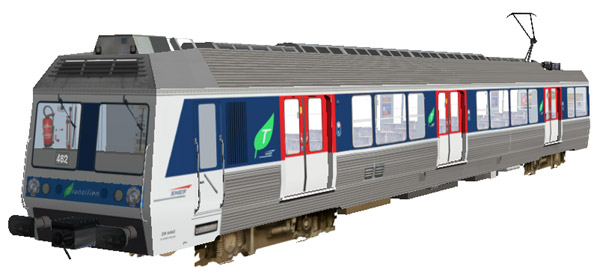
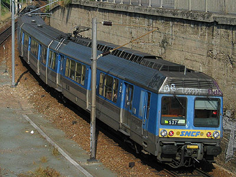
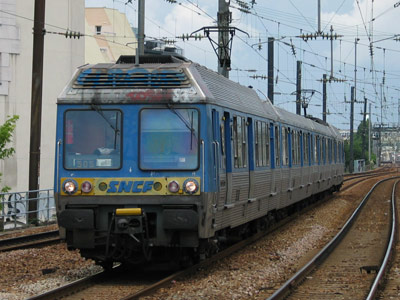
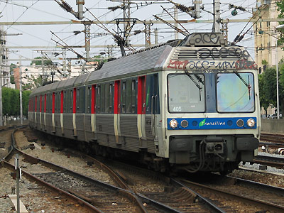
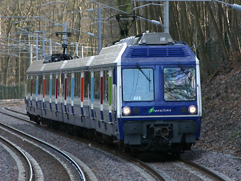
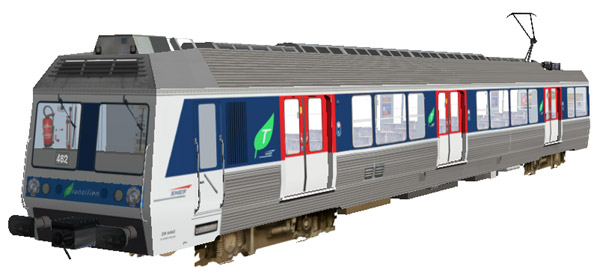

La Z 6400 version 
Dominique Tarel a réalisé la Z 6462.

Z 6400
Les Z 6400 sont des éléments automoteurs monocourants fonctionnant sous courant alternatif 25 kV 50 Hz conçus initialement pour la desserte de l'aéroport de Roissy et l'équipement de la banlieue Ouest Parisienne en remplacement des rames standard alimentées par troisième rail 750V. Suite à la mise en service de l'interconnexion du RER B, Les Z 6400 ont quitté Paris-Nord pour toutes se retrouver sur les groupes II et III de Paris-St Lazare.
Les Z 6400 ont été construites à 75 exemplaires de 1976 à 1979. Leur chaudron fait massivement appel à l'acier inoxydable comme leurs prédécesseurs Z 6100 ou 6300 mais les dimensions généreuses et l'aménagement en sièges individuels en font des automotrices résolument modernes. La composition de la rame adopte une disposition "musclée" de deux motrices à adhérence totale encadrant deux remorques. Schéma qui sera repris par les Z 8100 et les Z2N et qui permet à ces rames d'être toujours très performantes après plus de 30 ans de carrière.
La rame Z 6483/84 (une des trois rames transformées Grande ceinture) a été radiée suite à un incendie en décembre 2011.
Livrées
Les Z 6400 possédaient une livrée qui leur était propre. L'inox nu était réhaussé d'un bandeau bleu au niveau des baies. A l'avant, une moustaches jaune portait le sigle SNCF de type 'UIC'.
Lors de leur rénovation caisse au début des années 2000, les Z 6400 ont reçu une livrée à mi-chemin entre la livrée Ile-de-France équipant les RER et trains de banlieue SNCF et la livrée Transilien des Z 22500, avec la moustache peinte en bleu clair.
Trois rames modifiées pour la remise en service de la Grande Ceinture Ouest adoptent la nouvelle livrée Transilien bleue à berlingots de couleurs. La Z 6483/84 est radiée suite à incendie.
Pour plus d'info :
La fiche Z 6400 sur Wikipedia
Fiche technique des Z 6400 de Florent Brisou
Le dossier Z 6400 sur Metropole.net (Archive)
L'inventaire des Z 6400 sur Trains du Sud-Ouest

La Z 6537 à Bécon les Bruyères (14/10/2003)

La Z 6505 à emmarchement haut, à Clichy-Levallois (02/07/2003)

La Z 6405 IDF-Transilien à Bécon (30/05/2003)

La Z 6481 sur la Tangentielle Ouest (23/01/2005)
La Z 6400 version 
Dominique Tarel a réalisé la Z 6462.
